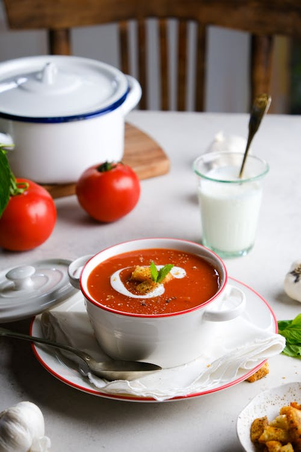

Tomato soup recipe

Description
A rich, velvety tomato soup that brings together the bold sweetness of ripe tomatoes, a hint of garlic, and the subtle depth of herbs. This comforting classic is slow-simmered to intensify flavor and blended to silky perfection. Whether served with a grilled cheese sandwich or a swirl of cream and basil, it’s a soul-warming bowl of pure simplicity — made for cozy nights or light lunches alike.
Ingredients
- 2 pounds fresh tomatoes
- 2 cups chicken broth
- 4 cloves garlic
- 1 medium yellow or white onion
- 2 tablespoons butter
- 2 tablespoons all-purpose flour
- 1 teaspoon sugar
- 1 teaspoon salt
Steps
- Prep the vegetables: Wash and chop the tomatoes. Peel and finely chop the garlic and onion.
- Sauté aromatics: In a large pot, melt the butter over medium heat. Add the chopped onion and garlic. Cook until soft and translucent, about 5–7 minutes.
- Make the roux: Stir in the flour and cook for 1–2 minutes, stirring constantly, until a paste forms.
- Add tomatoes: Add the chopped tomatoes to the pot. Stir well and cook for another 5 minutes to let the flavors blend.
- Pour in broth: Add the chicken broth, stir to combine, and bring everything to a boil. Then reduce heat and simmer for 20–25 minutes, until tomatoes are fully softened.
- Blend the soup: Use an immersion blender directly in the pot, or transfer the soup in batches to a countertop blender. Blend until smooth.
- Season: Stir in sugar and salt. Taste and adjust seasoning as needed.
- Serve hot: Pour into bowls and serve as-is, or garnish with cream, basil, or croutons.
Home